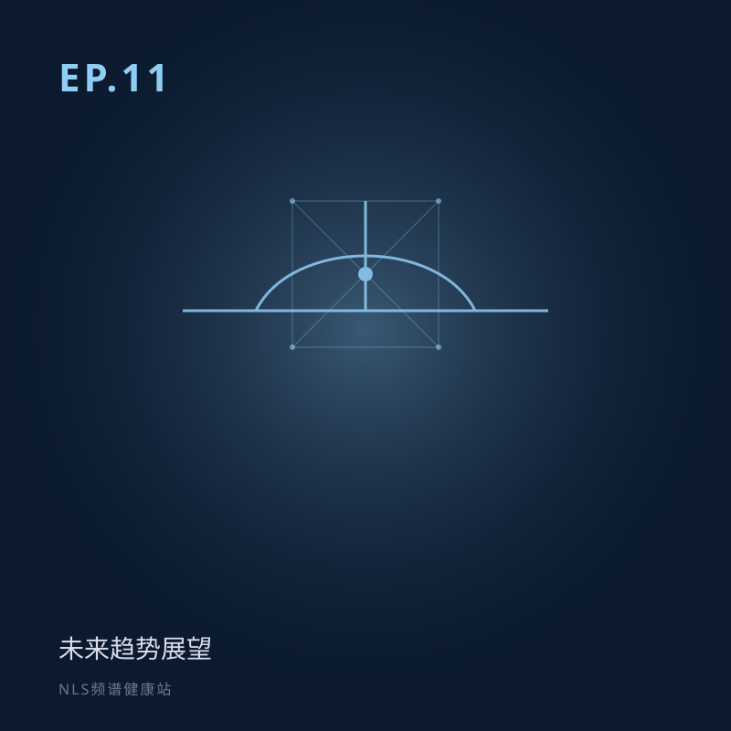
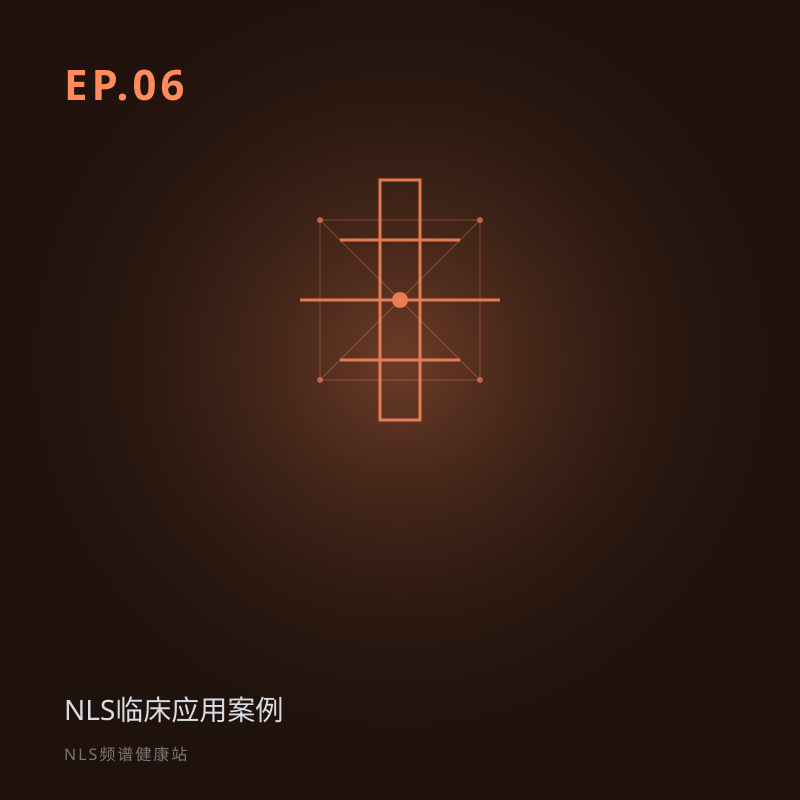
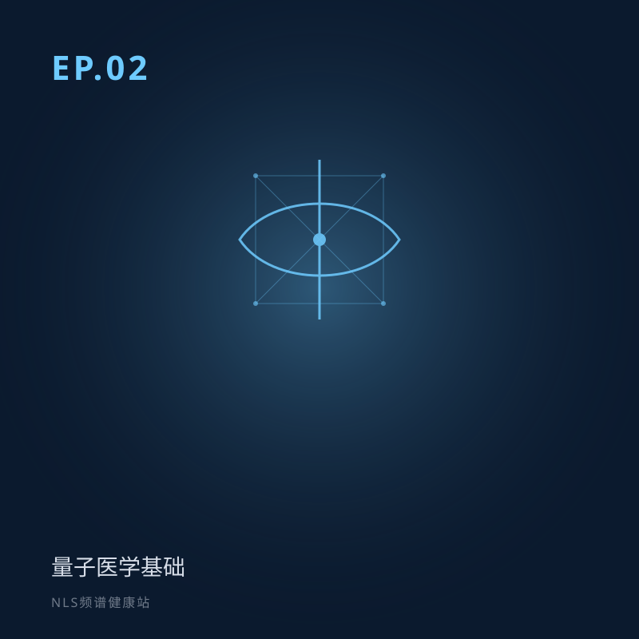
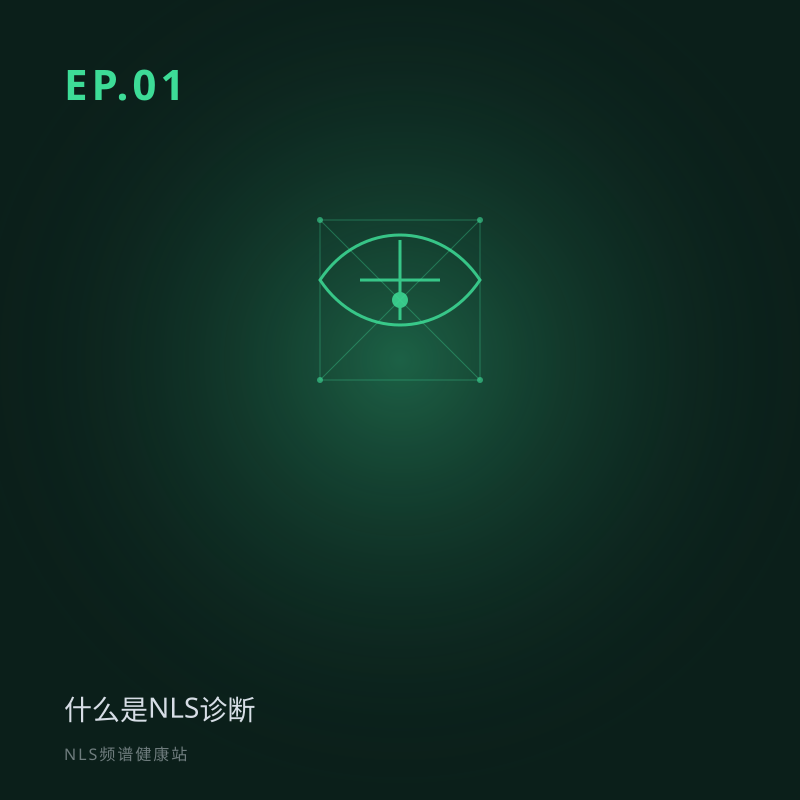

本季季度回顾：从「什么是NLS」到「地平线」
本季收官。11 期不是 11 个孤岛，而是 11 块拼图，拼出 NLS 的全貌。
在细胞频率中，预见健康的未来
《NLS频谱健康站》是一档专注于 NLS 非线性诊断技术与健康管理的科普播客。主持人小乐与小思用通俗语言解读原理、应用与边界。
第一季 12 期 · 手机 / 平板 / 电脑均可收听 · 内容仅供科普，不构成医疗建议
本季收官。回到第一期那个问题——「什么是 NLS？」——咱们回头看看这 11 期走过的路。从认知建立、技术原理、应用落地，到回望来路与展望未来，11 期不是 11 个孤岛，而是 11 块拼图，拼出 NLS 的全貌。

EP10 讲了 NLS 的「来路」，EP11 聊它的「去路」。先看医疗行业大势——AI、可穿戴、远程、个性化、从治已病到预测。再看 NLS 自己的演进方向。未来是地平线，有方向有光，但永远有雾。

前九期讲 NLS「是什么、怎么用」，本期讲它「从哪来」。从 1980 年代理论，到 1988 年触发传感器，到走出实验室、商业化、软件代代升级——37 年的家谱。也诚实话它的身世。

前八期讲 NLS「能做什么」，本期讲它能「照顾谁」。孩子坐不住、老人怕折腾、孕妇怕辐射——传统检查最难搞的人，恰恰最需要温柔的工具。NLS 无创、无辐射、甚至「睡着了也能查」。但越敏感的人群，越要谨慎。

EP07 讲「管已有问题」，EP08 再往前推——「别让问题发生」。中医叫「上工治未病」。本期聊 NLS 在健康筛查里的角色：补传统体检的「功能盲区」、做早期预警；也诚实话筛查的边界。

慢性病不是治一次就好的，是一辈子的事。本期聊 NLS 怎么帮我们把慢病「长期管起来」——四个字：早、动、整、个。从骨关节炎早于 X 光发现病变，到同病不同治的个体化案例，再到诚实的边界。

理论讲完五期，真实诊室里到底用得上吗？本期带你走进真实临床：从自行车队发现「肌肉问题的根源在内脏」，到肺脓肿的动态监测，看 NLS 如何在「早期、无创、动态、整体」上发力——也诚实讲清它的边界。

上期学会了「听懂」身体的频率。听懂之后呢？本期认识 Meta 疗法——那个拿着「标准音叉」帮身体校准音高的调音师。从降噪耳机式的反向共振，到帮细胞「开锁」的矫正机制，客观讲原理，也诚实讲局限。

上期说到每个细胞都在用频率「说话」——可我们怎么「听懂」它？本期认识频谱分析技术：从棱镜分光到 NLS 的四种频谱视图，教你一眼看出身体是在「建设」还是「消耗」。

你的身体里有一个看不见的通信网络——每一个细胞都像微型电台，用特定频率发送和接收信息。本期带你探索生物场世界，了解细胞如何「说话」，以及为什么这套理论和中医的「气」不谋而合。

如果把宇宙比作一个超级 WiFi 网络，我们身体里的每一个细胞就是连接到这个网络的设备。本期带你走进量子医学——探索 QELT（量子熵逻辑理论）如何统一宇宙四种基本力，以及「信息先于物质」如何改变我们对健康的认知。

想象一下，如果身体能像手机一样，随时「告诉」我们哪里不舒服，该多方便？本期节目，小乐和小思带你走进 NLS 诊断的世界——通过检测细胞发出的微弱电磁信号，帮助我们了解身体的健康状况。